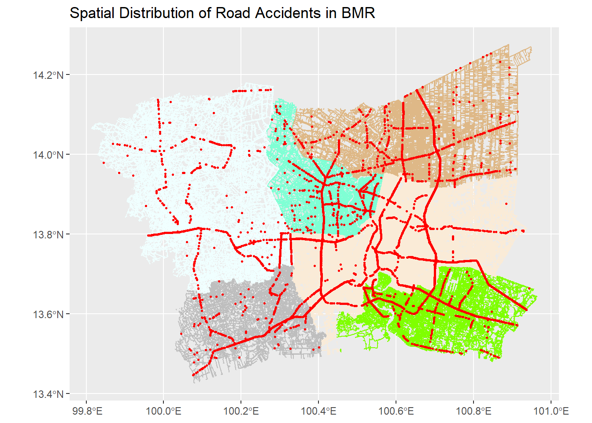

pacman::p_load(sf, tidyverse, tmap, spNetwork, spatstat,ggplot2, leaflet, dplyr, lubridate, dbscan, igraph, dodgr,future)Take-Home_Exercise 1
1. Overview
Road traffic accidents are a global health concern, responsible for approximately 1.19 million deaths annually and leaving 20–50 million people injured. Vulnerable road users—pedestrians, cyclists, and motorcyclists—are disproportionately affected. In Thailand, recognized as having the deadliest roads in Southeast Asia, about 20,000 people die annually in traffic accidents, with accidents peaking on national highways and accident-prone zones termed “black spots.”
2. Get Start
The specific objectives of this take-home exercise are as follows:
To visualize the spatio-temporal dynamics of road traffic accidents in BMR using appropriate statistical graphics and geovisualization methods.
To conduct detailed spatial analysis of road traffic accidents using appropriate Network Spatial Point Patterns Analysis methods.
To conduct detailed spatio-temporal analysis of road traffic accidents using appropriate Temporal Network Spatial Point Patterns Analysis methods.
2.1 The study area
The focus of this study would be in Bangkok Metropolitan Region, Thailand.
2.2 Install and Launching R packages.
In this take Home exercise 1, multiple R packages will be used to perform various geospatial and statistical analyses, including spatial point pattern analysis, data manipulation, and visualization. The required R packages are as follows:
spNetwork: This package provides functions for conducting Spatial Point Patterns Analysis, such as kernel density estimation (KDE) and K-function on networks. It is also useful for building spatial matrices and traditional spatial analysis methods based on reticular distances.
sf: Provides functions to manage, process, and manipulate Simple Features, a formal geospatial data standard that specifies the storage and access model of spatial geometries, including points, lines, and polygons.
tmap: Offers functions for plotting cartographic-quality maps and interactive maps, leveraging the Leaflet API for interactive visualizations.
tidyverse: A collection of packages designed for data science, including tools for data manipulation (dplyr), tidying (tidyr), and visualization (ggplot2).
spatstat: A package for analyzing spatial point patterns, offering tools for modeling spatial data.
ggplot2: A system for declaratively creating graphics, based on the grammar of graphics.
leaflet: Facilitates the creation of interactive maps directly in R, supporting a variety of map styles and data layers.
dplyr: Part of the tidyverse, providing powerful data manipulation functions.
lubridate: Aids in dealing with date-time data, making it easier to parse and manipulate temporal data.
dbscan: Used for density-based clustering of spatial data, often applied in identifying clusters of points, such as accident-prone areas.
igraph: A package for network analysis, offering tools to visualize and analyze the properties of spatial networks.
Use the following code to install and launch all necessary R packages:
3. Data Preparation
In this step, the code prepares road accident data for analysis by performing several transformations and data cleaning processes. Here’s a description of each part of the code:
Loading the Dataset: The data is loaded using
read_csv()from a CSV file calledthai_road_accident_2019_2022.csv. This dataset contains information on road accidents in Thailand from 2019 to 2022.Extracting Date Information:
The month of the accident is extracted from the
incident_datetimecolumn and saved asMonth_numusing themonth()function.The month is then converted to a factor (
Month_fac) with the month names labeled and abbreviated (label = TRUE, abbr = TRUE).
Day of the Week: The day of the week for each accident is calculated from the
incident_datetimecolumn and stored asdayofweek.Filtering Missing Data: The data is filtered to remove any rows with missing longitude or latitude values (
filter(!is.na(longitude) & !is.na(latitude))), as geographical coordinates are essential for spatial analysis.Converting to Spatial Data: The dataset is converted into a Simple Features (sf) object using
st_as_sf(). The function defines the coordinates as the columnslongitudeandlatitude, with the coordinate reference system (CRS) set to EPSG: 4326 (WGS84, a common geographic coordinate system).Reprojecting Data: The spatial data is transformed to a new CRS (projected coordinate system) using
st_transform(crs = 32647)which is the UTM Zone 47N, a projection commonly used for Thailand.
This process prepares the data for further spatial analysis by cleaning, extracting necessary temporal information, and transforming it into a usable geospatial format.
#! eval:false
acc <- read_csv("data/rawdata/thai_road_accident_2019_2022.csv") %>%
mutate(Month_num = month(incident_datetime)) %>%
mutate(Month_fac = month(incident_datetime,
label = TRUE,
abbr = TRUE)) %>%
mutate(dayofweek = weekdays(incident_datetime))%>%
filter(!is.na(longitude) & !is.na(latitude)) %>% # Remove rows with missing coordinates
st_as_sf(coords = c("longitude", "latitude"),
crs=4326) %>%
st_transform(crs = 32647)3.1 Filtering Data for Bangkok Metropolitan Region (BMR)
This code filters the road accident dataset (acc) to include only accidents that occurred within the Bangkok Metropolitan Region (BMR). The filtering is done by selecting specific provinces from the province_en column that correspond to the BMR area:
Bangkok
Nonthaburi
Nakhon Pathom
Pathum Thani
Samut Prakan
Samut Sakhon
The result is stored in a new dataset called BMR_acc, which contains only the accident records from these provinces. This step ensures that subsequent analysis focuses exclusively on the BMR region, aligning with the objectives of the geospatial analysis task.
BMR_acc <- acc %>%
filter(province_en %in% c("Bangkok", "Nonthaburi", "Nakhon Pathom",
"Pathum Thani", "Samut Prakan", "Samut Sakhon"))3.2 Saving the Filtered Data
In this step, the filtered dataset BMR_acc is saved to an RDS file using the write_rds() function. The file is saved at the specified path: "data/rds/BMR_acc_data.rds".
This allows the user to store the dataset and load it later for further analysis without needing to filter the data again. The RDS format is efficient for saving R objects, preserving both the structure and data of the BMR_acc dataset.
write_rds(BMR_acc, "data/rds/BMR_acc_data.rds")3.3 Loading the Filtered Data
In this step, the saved RDS file containing the filtered Bangkok Metropolitan Region accident data (BMR_acc_data.rds) is loaded back into R using the read_rds() function. The data is assigned to the object BMR_acc_data.
This allows for easy access to the previously saved dataset without the need to repeat the filtering and transformation steps, making the workflow more efficient. The file path "data/rds/BMR_acc_data.rds" points to the location where the data was saved in the earlier step.
BMR_acc_data <- read_rds("data/rds/BMR_acc_data.rds")3.4 Loading Road Network Data
In this step, the road network data is being read into R using the st_read() function from the sf package. This function reads spatial data from a shapefile.
The
dsnparameter specifies the directory where the raw data is located:"data/rawdata".The
layerparameter identifies the specific shapefile layer being loaded:"hotosm_tha_roads_lines_shp".
The result is stored in the object thai_one_map, which will contain the road network data in a spatial format, ready for spatial analysis or mapping tasks.
This step ensures that the road network can be used alongside the accident data for conducting network-based spatial point pattern analysis.
thai_one_map <- st_read(dsn = "data/rawdata",
layer = "hotosm_tha_roads_lines_shp")Reading layer `hotosm_tha_roads_lines_shp' from data source
`D:\SMUJunJie\ISSS626-GAA\Take-Home_Ex\Take-Home_Ex01\data\rawdata'
using driver `ESRI Shapefile'
Simple feature collection with 2792590 features and 14 fields
Geometry type: MULTILINESTRING
Dimension: XY
Bounding box: xmin: 97.34457 ymin: 5.643645 xmax: 105.6528 ymax: 20.47168
CRS: NA3.5 Loading Administrative Boundaries Data
In this step, administrative boundary data is loaded into R using the st_read() function from the sf package. This function reads spatial data from a shapefile, and the data is stored in the admin_boundaries object.
The
dsnparameter points to the directory containing the shapefile:"data/rawdata".The
layerparameter specifies the specific shapefile layer to be loaded:"tha_admbnda_adm1_rtsd_20220121".
This dataset likely contains the administrative boundaries of Thailand at the first administrative level, which could be provinces or regions. These boundaries can be used for geospatial analysis or visualization alongside the road network and accident data, providing a spatial context for the analysis.
admin_boundaries <- st_read(dsn = "data/rawdata",
layer = "tha_admbnda_adm1_rtsd_20220121")Reading layer `tha_admbnda_adm1_rtsd_20220121' from data source
`D:\SMUJunJie\ISSS626-GAA\Take-Home_Ex\Take-Home_Ex01\data\rawdata'
using driver `ESRI Shapefile'
Simple feature collection with 77 features and 16 fields
Geometry type: MULTIPOLYGON
Dimension: XY
Bounding box: xmin: 97.34336 ymin: 5.613038 xmax: 105.637 ymax: 20.46507
Geodetic CRS: WGS 843.6 Filtering Administrative Boundaries for BMR Provinces
In this step, the administrative boundaries for each province within the Bangkok Metropolitan Region (BMR) are filtered from the admin_boundaries dataset. The filter() function is used to select boundaries for specific provinces by matching the ADM1_EN column (which contains the English names of provinces) with the relevant province names. The filtered boundaries are stored in separate objects for each province:
Bangkok: Stored in
bangkok_boundary.Nonthaburi: Stored in
nonthaburi_boundary.Nakhon Pathom: Stored in
nakhon_pathom_boundary.Pathum Thani: Stored in
pathum_thani_boundary.Samut Prakan: Stored in
samut_prakan_boundary.Samut Sakhon: Stored in
samut_sakhon_boundary.
These boundary objects can be used for geospatial visualization or analysis, allowing for province-specific analysis or mapping of road accidents within each of these regions.
bangkok_boundary <- admin_boundaries %>%
filter(ADM1_EN == "Bangkok")
Nonthaburi_boundary <- admin_boundaries %>%
filter(ADM1_EN == "Nonthaburi")
Nakhon_Pathom_boundary <- admin_boundaries %>%
filter(ADM1_EN == "Nakhon Pathom")
Pathum_Thani_boundary <- admin_boundaries %>%
filter(ADM1_EN == "Pathum Thani")
Samut_Prakan_boundary <- admin_boundaries %>%
filter(ADM1_EN == "Samut Prakan")
Samut_Sakhon_boundary <- admin_boundaries %>%
filter(ADM1_EN == "Samut Sakhon")3.7Setting Coordinate Reference System (CRS)
In this step, the Coordinate Reference System (CRS) of the thai_one_map dataset is set to EPSG: 4326 using the st_crs() function from the sf package.
- EPSG: 4326 is the geographic coordinate system based on the World Geodetic System 1984 (WGS 84), which represents data using latitude and longitude.
This step ensures that the spatial data in thai_one_map is correctly projected and can be aligned with other datasets or maps using the same CRS, such as accident data or administrative boundaries.
st_crs(thai_one_map) <- 43263.8 Intersecting Road Network with Administrative Boundaries
In this step, the road network data (thai_one_map) is intersected with the administrative boundaries of each province in the Bangkok Metropolitan Region (BMR) to isolate the road segments within each province. The st_intersection() function is used to perform these spatial intersections.
Bangkok roads: Intersection between
thai_one_mapandbangkok_boundary, resulting in road segments within Bangkok.Nonthaburi roads: Intersection between
thai_one_mapandnonthaburi_boundary.Nakhon Pathom roads: Intersection between
thai_one_mapandnakhon_pathom_boundary.Pathum Thani roads: Intersection between
thai_one_mapandpathum_thani_boundary.Samut Prakan roads: Intersection between
thai_one_mapandsamut_prakan_boundary.Samut Sakhon roads: Intersection between
thai_one_mapandsamut_sakhon_boundary.
This step allows for focusing the road network analysis on each specific province within BMR. It prepares the data for further spatial analysis or visualization of road accidents within each region.
BMR_acc <- acc %>%
filter(province_en %in% c("Bangkok", "Nonthaburi", "Nakhon Pathom",
"Pathum Thani", "Samut Prakan", "Samut Sakhon"))
Bangkok_roads <- st_intersection(thai_one_map, bangkok_boundary)
Nonthaburi_roads <- st_intersection(thai_one_map, Nonthaburi_boundary)
Nakhon_Pathom_roads <- st_intersection(thai_one_map, Nakhon_Pathom_boundary)
Pathum_Thani_roads <- st_intersection(thai_one_map, Pathum_Thani_boundary)
Samut_Prakan_roads <- st_intersection(thai_one_map, Samut_Prakan_boundary)
Samut_Sakhon_roads <- st_intersection(thai_one_map, Samut_Sakhon_boundary)4. Geovisualisation and Analysis
4.1 Enhancing Accident Data with Date Components
This R code snippet enhances the accident data (BMR_acc_data) by extracting additional date components from the incident_datetime column. The mutate() function is used to create new columns:
incident_date: Converts
incident_datetimeto a date format usingas.Date().year: Extracts the year from
incident_datetime.month: Extracts the month from
incident_datetimeand labels it with the month name usingmonth(..., label = TRUE).day_of_week: Extracts the day of the week from
incident_datetimeand labels it with the weekday name usingwday(..., label = TRUE).
These transformations provide detailed temporal information about each accident, which can be crucial for analyzing trends over time, understanding seasonal variations, or exploring the distribution of accidents by day of the week. The enriched dataset (acc_data) will facilitate deeper temporal analyses and visualizations related to road traffic accidents.
acc_data <- BMR_acc_data %>%
mutate(
incident_date = as.Date(incident_datetime),
year = year(incident_datetime),
month = month(incident_datetime, label = TRUE),
day_of_week = wday(incident_datetime, label = TRUE)
)4.2 Plotting the Number of Accidents Over Time
This code creates a histogram to visualize the number of road accidents over time, with each bar representing the number of accidents occurring within a 30-day bin width:
ggplot(): Initializes the plot, mapping
incident_dateto the x-axis (aes(x = incident_date)), representing the timeline of accidents.geom_histogram(): Adds a histogram layer with a bin width of 30 days. The bars are filled with blue (
fill = "blue") and outlined in white (color = "white").labs(): Adds labels to the plot, setting the title to
"Number of Accidents Over Time"and labeling the x-axis as"Date"and the y-axis as"Number of Accidents".
This visualization allows you to observe the distribution of accidents over time, identifying periods of high accident frequency and any temporal patterns.
# Plot number of accidents by year and month
ggplot(acc_data, aes(x = incident_date)) +
geom_histogram(binwidth = 30, fill = "blue", color = "white") +
labs(title = "Number of Accidents Over Time", x = "Date", y = "Number of Accidents")
This histogram shows the number of road accidents over time from 2019 to early 2023. Each bar represents the number of accidents occurring over a 30-day period.
Observations:
There is significant variability in the number of accidents over time, with some months experiencing over 400 accidents.
A noticeable peak occurs around early 2020, followed by a dip, possibly reflecting effects of external events like the COVID-19 pandemic on traffic volume and accidents.
Accident counts seem to rise again towards the end of 2022 and early 2023.
This visualization provides an initial overview of how accident frequencies change over time, and it can be used to identify trends or investigate specific periods further.
4.3 Plotting the Spatial Distribution of Accidents on the Road Network
This code visualizes the spatial distribution of road accidents in the Bangkok Metropolitan Region (BMR) by overlaying the road network and accident points on a map using ggplot() and geom_sf():
geom_sf() is used to plot spatial objects, where:
Bangkok roads are plotted in antiquewhite.
Nonthaburi roads are plotted in aquamarine.
Nakhon Pathom roads are plotted in azure.
Pathum Thani roads are plotted in burlywood.
Samut Prakan roads are plotted in chartreuse.
Samut Sakhon roads are plotted in gray.
Road accidents from the
BMR_acc_datadataset are plotted on top of the road network in red with a size of 0.5 to represent individual accident points.The title of the plot is set to “Spatial Distribution of Road Accidents in BMR”.
This plot will display the accident locations overlaid on the road network of the different provinces within the BMR, helping to visually identify accident-prone areas or road segments with frequent accidents.
# Plot the spatial distribution of accidents on the road network
ggplot() +
geom_sf(data = Bangkok_roads, color = "antiquewhite") +
geom_sf(data = Nonthaburi_roads, color ="aquamarine") +
geom_sf(data = Nakhon_Pathom_roads, color = "azure") +
geom_sf(data = Pathum_Thani_roads, color = "burlywood") +
geom_sf(data = Samut_Prakan_roads, color = "chartreuse") +
geom_sf(data = Samut_Sakhon_roads, color = "gray") +
geom_sf(data = BMR_acc_data, aes(geometry = geometry), color = "red", size = 0.5) +
labs(title = "Spatial Distribution of Road Accidents in BMR")
The map you’ve generated provides a visual representation of the spatial distribution of road accidents in the Bangkok Metropolitan Region (BMR), with the road networks of different provinces overlaid in various colors:
Bangkok roads are plotted in antiquewhite.
Nonthaburi roads are in aquamarine.
Nakhon Pathom roads are in azure.
Pathum Thani roads are in burlywood.
Samut Prakan roads are in chartreuse.
Samut Sakhon roads are in gray.
The red points represent the locations of road accidents across the region, clearly highlighting accident clusters and areas with high traffic incidents. This visualization allows you to quickly identify road segments with frequent accidents, as well as compare accident density across different provinces in BMR.
4.4 Creating a Heatmap of Accidents by Hour of Day and Day of the Week
This code generates a heatmap to visualize the distribution of road accidents based on the hour of the day and the day of the week.
Step 1: Extract Hour of Day and Day of Week
The
mutate()function is used to create two new columns inacc_data:hour_of_day: Extracts the hour fromincident_datetimeusing thehour()function.day_of_week: Extracts the day of the week usingwday(label = TRUE), with labels for easier interpretation.
Step 2: Summarize Data by Hour and Day
- The data is grouped by both
hour_of_dayandday_of_weekusinggroup_by(), and the number of accidents is counted for each combination usingsummarise().
Step 3: Create the Heatmap
The heatmap is created using
ggplot(), where:x-axis: Represents the
hour_of_day.y-axis: Represents the
day_of_week.fill: Represents the count of accidents for each hour-day combination.
geom_tile(): Creates the heatmap tiles, where each tile’s color represents the accident count.
scale_fill_gradient(): The color gradient is set from white (low count) to red (high count) to emphasize areas with more accidents.
labs(): Sets the title and axis labels.
theme_minimal(): Applies a minimal theme for a clean look.
This heatmap provides insights into the busiest accident times during the week, highlighting patterns such as peak hours or specific days with a high frequency of accidents.
# Step 1: Extract hour of the day and day of the week for accidents
acc_data <- acc_data %>%
mutate(hour_of_day = hour(incident_datetime),
day_of_week = wday(incident_datetime, label = TRUE))
# Step 2: Summarize the data by hour of day and day of week
summary_data <- acc_data %>%
group_by(hour_of_day, day_of_week) %>%
summarise(count = n()) # Count the number of accidents for each combination
# Step 3: Create a heatmap of accidents by hour and day of week
ggplot(summary_data, aes(x = hour_of_day, y = day_of_week, fill = count)) +
geom_tile(color = "white") +
scale_fill_gradient(low = "white", high = "red") +
labs(title = "Heatmap of Accidents by Hour of Day and Day of Week",
x = "Hour of Day", y = "Day of Week") +
theme_minimal()
This heatmap visualizes the number of road accidents across different hours of the day and days of the week. The intensity of the color represents the accident frequency, with darker red areas indicating higher counts.
Observations:
Peak Accident Times: There are two notable peaks, one in the late morning around 10 AM and another during the evening hours around 8 PM.
Day of the Week: Accidents tend to occur consistently throughout the week, with Friday (周五) and Saturday (周六) having slightly higher accident counts in the evening compared to other days.
Early Morning: Fewer accidents are recorded during the early morning hours (midnight to around 6 AM), as indicated by the lighter shading.
4.5 Extracting the Month from the Incident Date
In this step, the code is extracting the month from the incident_datetime column in the BMR_acc_data dataset and creating a new column called month. The mutate() function is used to add this new variable, where the month() function extracts the month component from the incident_datetime.
This transformation allows for further analysis of accident trends by month, helping to explore any seasonal patterns in road accidents.
acc_data <- BMR_acc_data %>%
mutate(month = month(incident_datetime)) # Extract month from incident datetime4.6 Plotting Monthly Accident Counts Over Time
This code creates a time series plot to visualize the monthly number of road accidents over time:
Step 1: Extract Year and Month
- The
mutate()function is used to extract both the year and month from theincident_datetimecolumn, creating new columnsyearandmonth.
Step 2: Summarize Data by Year and Month
- The
group_by()function groups the data byyearandmonth, and thesummarise()function counts the number of accidents for each month, creating themonthly_accidentsdataset.
Step 3: Plot the Time Series
ggplot(): Initializes the plot with:
x-axis: The combination of
yearandmonthusing theinteraction()function.y-axis: The monthly accident count.
geom_line(): Adds a blue line connecting the accident counts over time.
geom_point(): Adds points on the line to mark each month’s accident count.
labs(): Adds a title and labels the axes (“Year-Month” for the x-axis and “Number of Accidents” for the y-axis).
theme(): Rotates the x-axis text to make it more readable, setting the angle to 90 degrees.
This time series plot provides a clear visualization of monthly accident trends, allowing for the identification of any long-term patterns or fluctuations in road accident counts over the years.
acc_data <- acc_data %>%
mutate(
year = year(incident_datetime), # Extract year
month = month(incident_datetime) # Extract month
)
monthly_accidents <- acc_data %>%
group_by(year, month) %>%
summarise(count = n())
# Plot time series of accidents
ggplot(monthly_accidents, aes(x = interaction(year, month, sep = "-"), y = count, group = 1)) +
geom_line(color = "blue") +
geom_point() +
labs(title = "Monthly Accident Counts Over Time", x = "Year-Month", y = "Number of Accidents") +
theme(axis.text.x = element_text(angle = 90, hjust = 1))This time series plot shows the monthly accident counts over the period from January 2019 to December 2022.
Observations:
Fluctuations: The number of accidents fluctuates throughout the period, with some peaks reaching around 350 accidents in certain months.
Trend: There seems to be a general upward trend in accidents toward the end of the time series, especially after a noticeable dip in late 2021.
Notable Events: There is a sharp decline in accident counts around late 2021, followed by a rapid increase. This could be associated with external factors such as reduced traffic during lockdown periods or other significant events.
4.7 Seasonal Decomposition of Monthly Accident Counts
This code performs seasonal decomposition on the time series of monthly accident counts, which helps to break down the data into its trend, seasonal, and residual components.
Step 1: Create a Time Series Object
The
ts()function is used to create a time series objectts_datafor the monthly accident counts.The
countcolumn from themonthly_accidentsdataset is used as the data.The
startargument defines the starting year and month for the time series.frequency = 12indicates that the data is monthly (12 periods per year).
Step 2: Perform Seasonal Decomposition
The
stl()function performs Seasonal-Trend decomposition using LOESS (STL) on the time seriests_data.s.window = "periodic"specifies that the seasonal component is to be extracted with a fixed periodicity (i.e., 12 months for monthly data).
Step 3: Plot the Decomposition
The
plot()function visualizes the decomposition, showing the trend, seasonality, and residuals of the monthly accident data.- The main title is set to “Seasonal Decomposition of Monthly Accident Counts.”
This decomposition helps to analyze the underlying patterns in the data, revealing any long-term trends, recurring seasonal effects (e.g., certain months having more accidents), and any random residuals or noise that cannot be explained by the trend or seasonality.
# Create a time series object for accident counts
ts_data <- ts(monthly_accidents$count, start = c(min(monthly_accidents$year), min(as.numeric(monthly_accidents$month))), frequency = 12)
# Perform seasonal decomposition
decomp <- stl(ts_data, s.window = "periodic")
# Plot the decomposition
plot(decomp, main = "Seasonal Decomposition of Monthly Accident Counts")This plot displays the seasonal decomposition of monthly accident counts, breaking the data down into the following components:
Data (Top Panel): The original time series showing the observed monthly accident counts.
Seasonal Component (Second Panel): This reveals recurring patterns in the data, which repeat every 12 months (yearly cycle). You can observe consistent seasonal fluctuations, with certain months regularly showing higher or lower accident counts.
Trend Component (Third Panel): The long-term trend in the data shows an initial decline from 2019 through mid-2021, followed by a notable increase in accident counts from late 2021 into 2023.
Remainder (Residuals) (Bottom Panel): The residuals represent the remaining variation in the data after removing the trend and seasonal components. These fluctuations are likely due to random noise or other factors not captured by the model.
Observations:
The seasonal component shows a regular pattern of variation across the year, with higher accidents during certain months.
The trend shows a decrease during 2020 and early 2021, possibly due to reduced traffic during COVID-19 lockdowns, followed by a sharp increase starting in late 2021.
The residuals appear relatively small and random, suggesting that the model captures the key patterns well.
4.8 Monthly Spatial Analysis of Road Accident Hotspots in BMR Using KDE
The code performs Kernel Density Estimation (KDE) on road accident data for each month and combines the results into a single data frame for further analysis or visualization.
Key Steps:
KDE Calculation for Each Month:
The
kde_for_monthfunction extracts spatial coordinates (st_coordinates()) from accident data and creates a bounding box (as.owin()) for defining the spatial window.It converts the accident data into a point pattern (
ppp) and applies Kernel Density Estimation (density()) with a smoothing parametersigma = 300.The result is transformed into a data frame (
as.data.frame()) to be used for visualization withggplot.
Suppress Duplicate Warnings:
- Warnings related to duplicate points in the dataset are suppressed to avoid unnecessary output.
Apply KDE Grouped by Month:
- The KDE function is applied to each month’s data using
group_by(Month_num)andgroup_map(). This groups the dataset by month and applies thekde_for_monthfunction to each group.
- The KDE function is applied to each month’s data using
Combining KDE Results:
- The resulting KDE for each month is combined into a single data frame (
kde_combined) usingbind_rows(), with an additionalmonthcolumn to identify the corresponding month for each KDE result.
- The resulting KDE for each month is combined into a single data frame (
kde_for_month <- function(month_data) {
# Extract coordinates
coords <- st_coordinates(month_data$geometry)
# No need to remove duplicates, proceed with all coordinates
# Create a bounding box or window for the KDE
window <- as.owin(st_bbox(month_data))
# Convert to a point pattern for KDE
acc_ppp <- ppp(x = coords[,1], y = coords[,2], window = window)
# Perform Kernel Density Estimation with an optimal sigma value
acc_kde <- density(acc_ppp, sigma = 300) # Adjust sigma as needed
# Convert KDE result to data frame for ggplot
kde_raster <- as.data.frame(acc_kde)
return(kde_raster)
}
# Suppress warnings related to duplicate points
options(warn = -1)
# Calculate KDE for each month
kde_data <- BMR_acc_data %>%
group_by(Month_num) %>%
group_map(~ kde_for_month(.x), .keep = TRUE) # Apply KDE for each group (month)
# Combine all KDE data
kde_combined <- bind_rows(kde_data, .id = "month")4.9 Monthly Heatmap of Road Accident Densities in BMR Using KDE
This code creates a heatmap to visualize the Kernel Density Estimation (KDE) of road traffic accidents for each month, using ggplot2.
Key Elements:
ggplot with Raster Layer (
geom_raster()):geom_raster()is used to plot the KDE results, where each tile is filled based on the density values.
Color Scale (
scale_fill_viridis_c()):The
magmacolor palette is used with a reversed direction for better contrast, visually highlighting high-density areas.The
fill = valueaesthetic maps density values to color intensity.
Faceted by Month (
facet_wrap()):- The KDE results are faceted by month using
facet_wrap(~ month), arranging the plots into a grid with 3 columns (ncol = 3).
- The KDE results are faceted by month using
Minimal Theme (
theme_minimal()):- A minimalist design is applied, removing axis labels, ticks, and grid lines for a clean visual focus on the KDE.
Custom Labels:
- The plot title is set as “KDE of Road Traffic Accidents by Month”, and the fill color legend is labeled as “Density”.
ggplot(kde_combined, aes(x = x, y = y, fill = value)) +
geom_raster() +
scale_fill_viridis_c(option = "magma", direction = -1) + # Magma with reverse direction for contrast
labs(title = "KDE of Road Traffic Accidents by Month", fill = "Density") +
facet_wrap(~ month, ncol = 3) +
theme_minimal() +
theme(axis.text.x = element_blank(),
axis.text.y = element_blank(),
axis.ticks = element_blank(),
panel.grid = element_blank())General Overview:
The heatmap panels display the spatial distribution of road accident densities across each month in the Bangkok Metropolitan Region (BMR).
The intensity of red indicates high-density areas where accidents are more frequent, while yellow represents low-density areas.
The color scale on the right, ranging from 0 to around 2e-05, shows the density values, with darker regions indicating more accident-prone areas.
Consistent Hotspots:
There appear to be consistent accident hotspots across multiple months, especially around key intersections and high-traffic zones in central regions.
These hotspots are visible in nearly all months (e.g., months 1, 4, 7, and 12), suggesting persistent high-risk zones in the BMR, which could be due to road layout, traffic volume, or hazardous conditions.
Seasonal Variation:
Although the overall pattern of accident distribution seems similar across months, the intensity of hotspots may vary slightly between certain months.
Some months, such as October (10) and December (12), show slightly more intense hotspot activity than others, potentially correlating with changes in traffic patterns due to holidays or seasonal weather conditions.
Low Density Areas:
A significant portion of the BMR has very low accident densities, as indicated by the vast yellow regions on the heatmap.
These areas may represent residential or less congested zones with lower accident frequencies, or areas with fewer road users during certain months.
Implications for Traffic Management:
The identification of consistent accident hotspots suggests areas where increased traffic enforcement, road safety measures, or infrastructure improvements may be necessary.
Authorities can focus on these high-density zones for further investigation into accident causes and potential safety interventions.
Further Investigation:
- The variations in density between months could be explored further by comparing external factors, such as weather patterns, road conditions, and holiday seasons, to see if these contribute to the observed changes in accident density.
4.10 Preparing Spatial Accident Data for Point Pattern Analysis in BMR
This code prepares the road accident data for spatial point pattern analysis by converting it into a format compatible with the spatstat package in R. Here’s a breakdown of the key steps:
Suppress Warnings:
options(warn = -1)disables warnings related to duplicate points, which may occur when dealing with spatial data.
Extract Spatial Coordinates:
st_coordinates(acc_data$geometry)extracts the spatial coordinates (longitude and latitude) from thegeometrycolumn in theacc_datadataset.
Create a Window (Bounding Box):
as.owin(st_bbox(acc_data))creates a bounding box around the study area, which will be used as the spatial window for the analysis. The bounding box is converted into an observation window usingas.owin().
Convert to Point Pattern (
ppp):- The accident data is converted into a point pattern object using the
ppp()function, where the x and y coordinates (longitude and latitude) are input along with the study area’s window. This format is essential for conducting further spatial analyses, such as Kernel Density Estimation (KDE) or spatial clustering.
- The accident data is converted into a point pattern object using the
options(warn = -1)
# Extract the spatial coordinates from the geometry column
coords <- st_coordinates(acc_data$geometry)
# Create a window (bounding box) for your study area
window <- as.owin(st_bbox(acc_data))
# Convert the accident data to a point pattern (ppp) object for spatstat
acc_ppp <- ppp(x = coords[, 1], y = coords[, 2], window = window)4.11 Analyzing Spatial Clustering of Road Accidents Using Ripley’s K-function
This code performs a K-function analysis (Ripley’s K-function) on road accident data, which is useful for understanding the spatial distribution of accidents and identifying clustering patterns. Here’s a breakdown:
K-function Calculation:
Kest(acc_ppp)computes Ripley’s K-function on the point pattern objectacc_ppp. The K-function measures the spatial clustering of points over a range of distances, helping to determine whether points (accidents) are clustered, randomly distributed, or dispersed at different scales.
Plot the K-function:
The
plot()function visualizes the result of the K-function analysis.The plot’s title is set as “Ripley’s K-function for Road Accidents”, and the legend is positioned in the top right using
legendargs = list(x = "topright").
Interpretation:
- The K-function plot will show how accident clustering behaves at different distances. If the K-function line is above the expected value for a random distribution, it indicates clustering. If it’s below, it suggests dispersion.
# Perform K-function analysis
k_function <- Kest(acc_ppp)
# Plot the result
plot(k_function, main = "Ripley's K-function for Road Accidents",
legendargs = list(x = "topright"))
The plot illustrates Ripley’s K-function, which analyzes the spatial distribution of road accidents and helps determine whether they are clustered, randomly distributed, or dispersed over space.
Key Observations:
Black Line (Observed K-function):
The black line represents the K-function for the actual accident data.
A rapid increase in the K-function suggests that road accidents are highly clustered.
The clustering effect is particularly noticeable at smaller distances and persists as the distance increases.
Red Dashed Line (Poisson Process):
The red dashed line represents the expected K-function if the accidents were randomly distributed (Poisson process).
The observed K-function (black line) is consistently above the Poisson process, which indicates that road accidents are not randomly distributed but are spatially clustered.
Distance:
As the distance r increases (on the x-axis), the K-function continues to rise sharply, showing that clustering occurs over both small and larger spatial scales.
This suggests that there are accident-prone zones where road accidents occur close to one another, and this clustering persists over extended areas.
Conclusion:
Ripley’s K-function confirms that road accidents are spatially clustered in the study area. The clustering is evident at both small and large distances, indicating the presence of high-risk zones where accidents are more frequent. Understanding this spatial clustering is essential for developing targeted safety interventions, such as traffic control measures or infrastructure improvements in accident hotspots.
4.12 Monte Carlo Simulation for Validating Road Accident Clustering Using Ripley’s K-function
This code performs Monte Carlo simulations to generate an envelope for Ripley’s K-function. The envelope is used to compare the observed clustering pattern of road accidents with a Complete Spatial Randomness (CSR) pattern, which helps in determining if the observed clustering is statistically significant.
Key Steps:
Monte Carlo Simulations:
The
envelope()function is applied to the point patternacc_pppwith theKestfunction. This function generates a range of expected K-functions based on 99 random simulations (nsim = 99), assuming the accidents are distributed according to CSR.CSR serves as a baseline or null hypothesis, which assumes that the points (road accidents) are randomly distributed in space.
K-function Envelope:
- The result (
envelope_k) is an envelope that includes a lower and upper bound based on the Monte Carlo simulations. The observed K-function can be compared against this envelope to assess whether the clustering pattern is significantly different from randomness.
- The result (
Interpretation:
- If the observed K-function lies outside the envelope, this indicates that the observed spatial pattern is significantly different from what would be expected under CSR, suggesting significant clustering or dispersion.
# Perform Monte Carlo simulations to compare with CSR
envelope_k <- envelope(acc_ppp, Kest, nsim = 99) # Perform 99 simulations for CSRGenerating 99 simulations of CSR ...
1, 2, 3, 4, 5, 6, 7, 8, 9, 10, 11, 12, 13, 14, 15, 16, 17, 18, 19, 20,
21, 22, 23, 24, 25, 26, 27, 28, 29, 30, 31, 32, 33, 34, 35, 36, 37, 38, 39, 40,
41, 42, 43, 44, 45, 46, 47, 48, 49, 50, 51, 52, 53, 54, 55, 56, 57, 58, 59, 60,
61, 62, 63, 64, 65, 66, 67, 68, 69, 70, 71, 72, 73, 74, 75, 76, 77, 78, 79, 80,
81, 82, 83, 84, 85, 86, 87, 88, 89, 90, 91, 92, 93, 94, 95, 96, 97, 98,
99.
Done.# Plot the envelope of the K-function (observed vs CSR)
plot(envelope_k, main = "K-function with CSR Envelope")This plot shows the comparison between the observed K-function for road accidents and the CSR envelope generated from Monte Carlo simulations. The plot helps in assessing whether the observed spatial pattern of road accidents is significantly different from a random distribution.
Key Components:
Black Line (
K_obs(r)):This represents the observed K-function for the road accident data.
The line shows how road accidents are spatially clustered at various distances, with larger values of
ron the x-axis corresponding to greater distances between points.
Dashed Red Line (
K_theo(r)):- This represents the theoretical K-function under Complete Spatial Randomness (CSR). It serves as a baseline to compare the observed clustering against a random spatial distribution of points.
Gray Shaded Envelope (
K_hi(r)andK_lo(r)):The envelope is the range of expected values from the Monte Carlo simulations (99 simulations).
If the observed K-function (black line) lies outside this envelope, it suggests that the observed pattern is significantly different from randomness.
Interpretation:
The observed K-function (black line) is consistently above the upper boundary of the CSR envelope, indicating significant spatial clustering of road accidents.
This suggests that the clustering of road accidents is not due to random chance but likely due to underlying factors such as road conditions, traffic patterns, or intersection density.
The K-function continues to rise steeply as the distance increases, showing that the clustering persists over larger distances.
5. NDKE Analysis
5.1 Geospatial analysis of Bangkok road accidents.
three datasets are assigned to variables:
bangkok_acc_data: Accident data for the Bangkok Metropolitan Region, assigned from BMR_acc_data.
bangkok_boundary: Geographic boundary data for Bangkok.
bangkok_roads: Road network data for Bangkok.
# Use your dataset names
bangkok_acc_data <- BMR_acc_data
bangkok_boundary <- bangkok_boundary
bangkok_roads <- Bangkok_roads5.2 CRS Transformation for Spatial Data in Road Accident Analysis
The code shown here is performing a coordinate reference system (CRS) transformation for spatial datasets related to road accidents and road networks in Bangkok. This step ensures that all spatial data is using the same CRS for accurate analysis and visualization.
Key Steps:
Target CRS (
32647):- The target CRS is set to UTM Zone 47N (EPSG: 32647), which is appropriate for spatial data in Bangkok, ensuring accurate distance and area calculations.
CRS Transformation (
st_transform):The function
st_transform()is used to project each spatial dataset into the specified CRS:bangkok_acc_data: Road accident data for Bangkok.bangkok_roads: Road network data for Bangkok.bangkok_boundary: Administrative boundary data for Bangkok.
This transformation is necessary because spatial datasets often come with different CRS, and for accurate geospatial analysis (e.g., distance measurements, KDE), all datasets must be in the same projection.
target_crs <- 32647 # UTM Zone 47N
bangkok_acc_data <- st_transform(bangkok_acc_data, crs = target_crs)
bangkok_roads <- st_transform(bangkok_roads, crs = target_crs)
bangkok_boundary <- st_transform(bangkok_boundary, crs = target_crs)5.3 Preprocessing Road Network Data: Filtering and Geometry Casting in Geospatial Analysis
This code snippet processes the road network data for Bangkok, ensuring that only the relevant geometry types are retained and properly formatted for further geospatial analysis. Here’s a breakdown:
Filter Geometry Types:
- The first part of the code filters the road network dataset (
bangkok_roads) to retain only the LINESTRING and MULTILINESTRING geometries. These geometries represent roads as lines and multi-segmented lines, which are essential for spatial analysis in road networks.
- The first part of the code filters the road network dataset (
Cast to LINESTRING:
The second part of the code converts or “casts” any MULTILINESTRING geometries into LINESTRING geometries using
st_cast(). This ensures consistency, as most road network analysis requires uniform geometry types.The argument
group_or_split = TRUEensures that complex MULTILINESTRING geometries are split into individual LINESTRING components where necessary.
roads_in_bangkok <- bangkok_roads %>%
filter(st_geometry_type(bangkok_roads) %in% c("LINESTRING", "MULTILINESTRING"))
roads_in_bangkok <- st_cast(roads_in_bangkok, "LINESTRING", group_or_split = TRUE)5.4 Dividing and Sampling Road Networks: Lixelization and Center Extraction for Spatial Analysis
This code is part of preparing the road network data for spatial analysis by dividing the road network into lixels (linear pixels) and extracting their central points. Lixels are a crucial concept in network-based spatial analysis, particularly for road networks.
Create Lixels:
lixelize_lines()divides the road network (roads_in_bangkok) into segments called lixels.The argument
10000specifies the desired length of each lixel in meters.The argument
mindist = 5000ensures a minimum distance of 5000 meters between the lixels to avoid overlap and maintain spatial resolution.
Extract Lixel Centers:
lines_center()extracts the central points of the lixels created in the previous step, storing them insamples_bangkok. These central points are often used as sample points for further spatial analyses, such as KDE or spatial interpolation, in road network studies.
lixels_bangkok <- lixelize_lines(roads_in_bangkok, 10000, mindist = 5000)
samples_bangkok <- lines_center(lixels_bangkok)5.5 Network Kernel Density Estimation (NKDE) for Road Accident Analysis with Parallel Processing
This code performs Network Kernel Density Estimation (NKDE) on the road network using parallel processing for faster computation. NKDE is used to estimate the density of events (e.g., accidents) over a road network, considering the underlying spatial structure of the network.
Key Steps:
Parallel Processing Setup:
plan(multisession)enables parallel computation using multiple CPU cores, which speeds up the NKDE process by distributing tasks across different processing units.
NKDE Calculation (
nkde()):lines = lixels_bangkok: The road network (lixels) where the events (accidents) occur.
events = bangkok_acc_data: The event data, in this case, road accidents in Bangkok.
w = rep(1, nrow(bangkok_acc_data)): Assigns equal weight to each accident.
samples = samples_bangkok: Central points from the lixels used as sampling locations for estimating density.
kernel_name = “quartic”: The quartic kernel is used for smoothing the density estimation.
bw = 1000: Bandwidth (in meters), which controls the smoothing scale of the kernel density estimation.
method = “simple”: A simplified method for NKDE, suitable for this analysis.
grid_shape = c(100, 100): Specifies the grid resolution for the density estimation.
verbose = TRUE: Enables detailed output during computation to track progress.
Future Processing:
future()is used to parallelize the NKDE computation. The result is stored infuture_nkde_result, allowing the process to run in the background and use multiple cores efficiently.
plan(multisession) # Parallelize using multiple CPU cores
future_nkde_result <- future({
nkde(
lines = lixels_bangkok,
events = bangkok_acc_data,
w = rep(1, nrow(bangkok_acc_data)),
samples = samples_bangkok,
kernel_name = "quartic",
bw = 1000,
div = "bw",
method = "simple",
grid_shape = c(100, 100),
verbose = TRUE
)
})print(future_nkde_result)MultisessionFuture:
Label: '<none>'
Expression:
{
nkde(lines = lixels_bangkok, events = bangkok_acc_data, w = rep(1,
nrow(bangkok_acc_data)), samples = samples_bangkok, kernel_name = "quartic",
bw = 1000, div = "bw", method = "simple", grid_shape = c(100,
100), verbose = TRUE)
}
Lazy evaluation: FALSE
Asynchronous evaluation: TRUE
Local evaluation: TRUE
Environment: R_GlobalEnv
Capture standard output: TRUE
Capture condition classes: 'condition' (excluding 'nothing')
Globals: 3 objects totaling 205.19 MiB (sf 'lixels_bangkok' of 109.38 MiB, sf 'bangkok_acc_data' of 5.54 MiB, sf 'samples_bangkok' of 90.27 MiB)
Packages: 1 packages ('spNetwork')
L'Ecuyer-CMRG RNG seed: <none> (seed = FALSE)
Resolved: FALSE
Value: <not collected>
Conditions captured: <none>
Early signaling: FALSE
Owner process: df53c1dd-823d-a8bd-aeb5-9a0b3dd9086b
Class: 'MultisessionFuture', 'ClusterFuture', 'MultiprocessFuture', 'Future', 'environment'The MultisessionFuture object output indicates that the Network Kernel Density Estimation (NKDE) task has been initiated and is running asynchronously across multiple CPU cores. Here’s what the details tell us:
Key Details:
Asynchronous Evaluation (TRUE):
- The task is running asynchronously, meaning it is being executed in the background, which allows other processes to run concurrently. The evaluation of the NKDE will be completed independently.
Lazy Evaluation (FALSE):
- This indicates that the task has started executing immediately, without waiting for explicit evaluation to be triggered.
Resources Used:
Memory Usage: The task involves significant data objects, consuming 205.19 MiB of memory in total.
The
lixels_bangkokobject, which represents the road network segments (lixels), is the largest, using about 109.38 MiB.The
samples_bangkokobject, which contains the sample points (centers of lixels), uses about 90.27 MiB.The
bangkok_acc_dataobject, which stores the accident event data, takes 5.54 MiB.
Parallel Processing:
- The job is leveraging the
spNetworkpackage to perform the network-based KDE, which is running across multiple sessions (using multicore processing). This significantly improves the computational efficiency, especially for large spatial datasets.
- The job is leveraging the
Resolved: FALSE:
- The NKDE task has not yet completed, meaning the density estimation process is still in progress. Once resolved, the result will be stored in
future_nkde_resultand can be accessed or plotted.
- The NKDE task has not yet completed, meaning the density estimation process is still in progress. Once resolved, the result will be stored in
Tracking Output:
- The setup ensures that any output or conditions (e.g., errors or warnings) will be captured during the NKDE process. This is helpful for debugging and monitoring the execution status.
Conclusion:
The NKDE computation is actively running in parallel across multiple CPU cores to estimate the density of road accidents over the road network. The use of asynchronous evaluation allows for efficient resource utilization. Given the memory consumption, this approach is well-suited for handling large spatial datasets like road networks and accident data in Bangkok. You can monitor the status, and once completed, visualize the NKDE results to analyze accident density patterns across the road network.